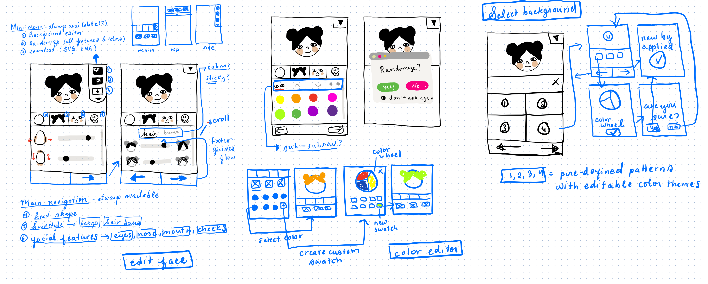
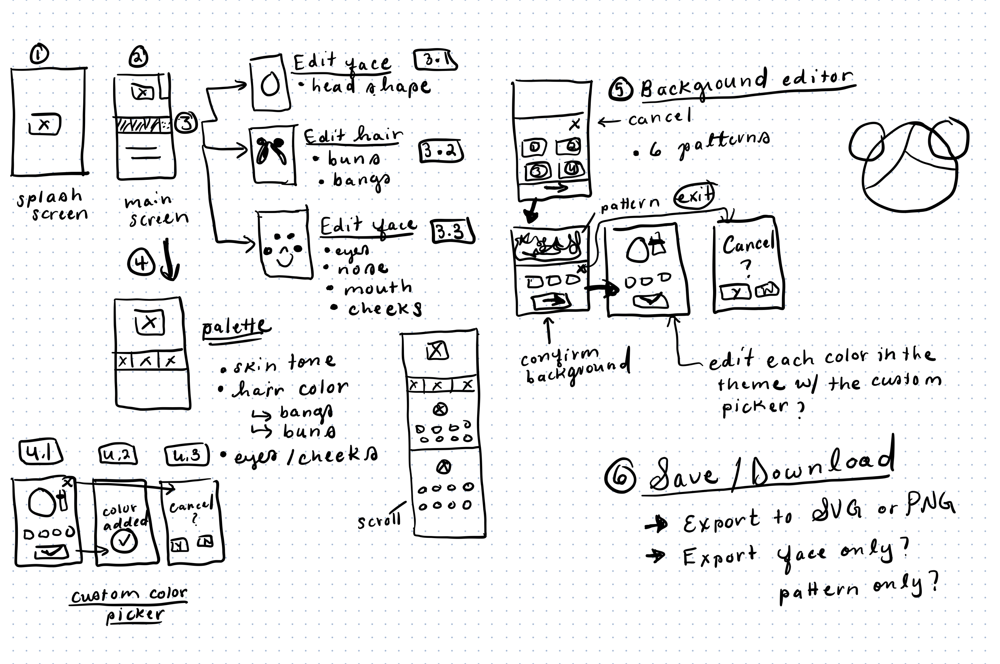
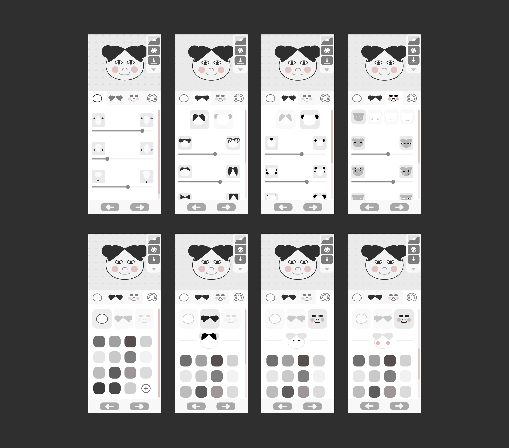
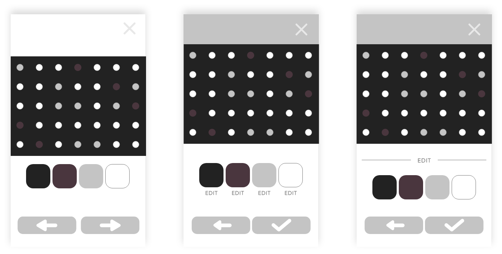
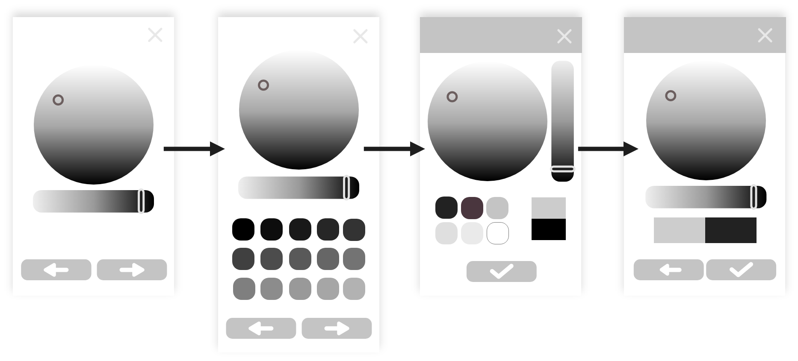
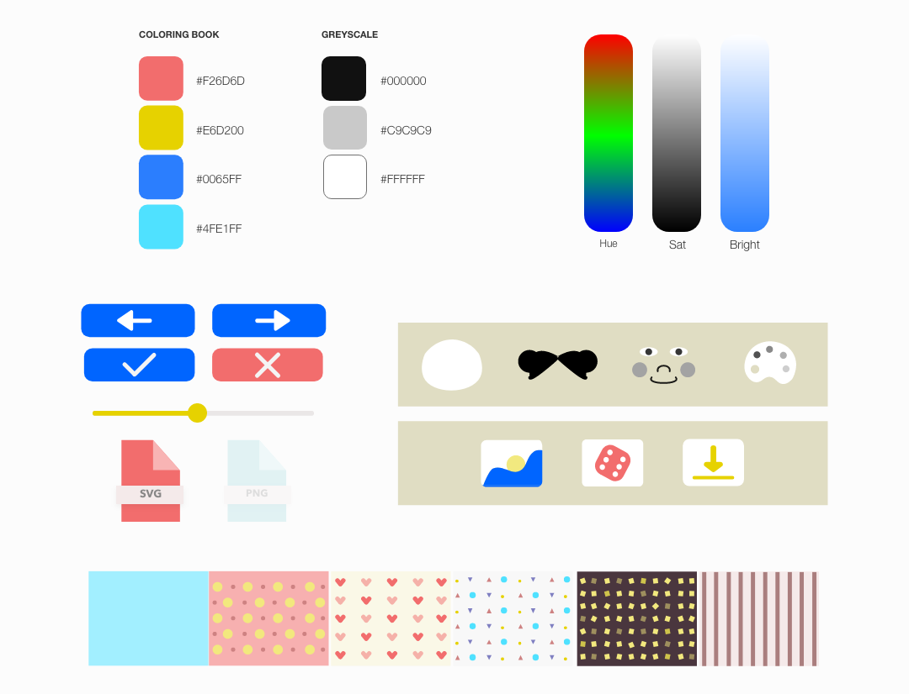
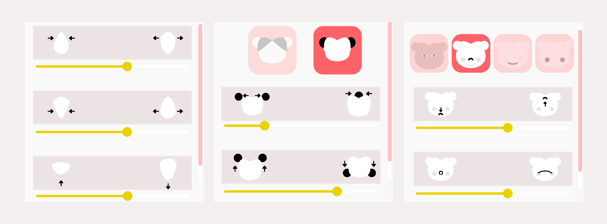
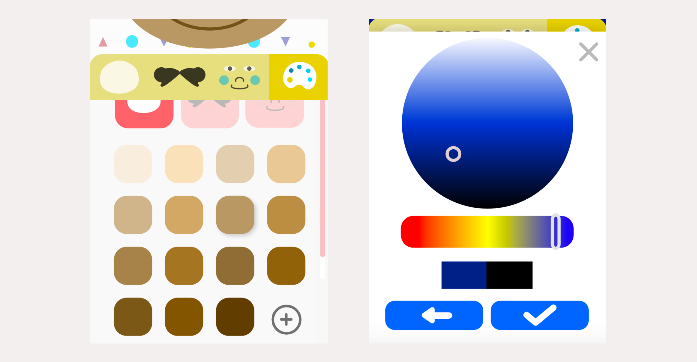
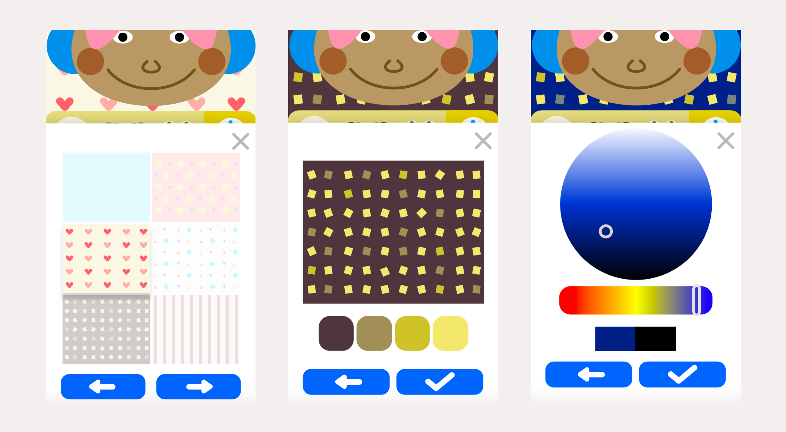
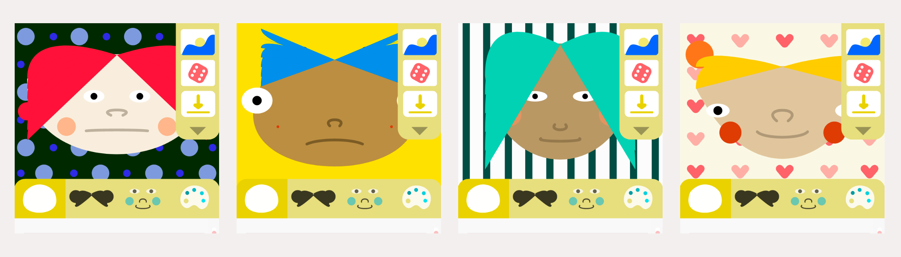

Product Design, Web Graphics | 2020
Character Designer UI
Designing a delightful character creation interface for the mobile web.
A bit of background.
“Dress up game” was a label once attached to most games intended for young girls. It encompassed everything from actual dress up games to home decoration games and RPGs with female protagonists. The fun I had playing dress up games as a kid had a huge impact on my interest in art and coding. Sadly, the rise of mobile-first design paradigms and deprecation of Flash killed the cultural relevance of dress up games in a web context.
On the bright side, many existing web graphics frameworks enable us to create pretty much anything and make it responsive. As an exercise in creative coding, I developed a random face generator inspired by Flash games from the early-to-mid 2000s.
→ If you're interested in learning about the technical details of this project, check out my open source repo on GitHub!
→ Or, you can view the live demo here.
The problem.
In the prototype for the random face generator, I implemented the amazingly convenient, but notoriously ugly dat.GUI library. dat.GUI is wonderful for testing web graphics, but it isn't the ideal UI solution for a project with mobile aspirations.
Unfortunately, designing an alternative UI wasn’t so straightforward. There was a disappointing lack of character designers available to peruse on sites like Dribbble and Behance. To make matters worse, many of the popular dress up games on the App Store were either difficult to use, unstable, or both.
It was clear that web-based character designers, along with the .swf file extension and sexy glitter graphics, are just another relic of Web 2.0. Without a mobile-friendly standard for character design UIs in 2020, I decided to make one myself.
Research
While exploring popular character designers, I often felt as though the UI was tacked on as an afterthought, emphasizing graphics and artistry over the experience of users. I wanted to design according to my target audience’s preferences. Even if it meant continuously reiterating on favorable aesthetics or compromising on my own opinions about usability.
To understand how people felt about character designers, I relied on a combination of primary and secondary research. In times of social distancing, I couldn't schedule casual coffee shop dates with friends for this purpose. I had to get a little creative. My methods included:
Offering $5 Starbucks gift cards to friends and strangers in shared Discord servers in exchange for their time.
Lurking on video game-related forums and discussion threads.
Reading opinion pieces, watching reviews on Youtube, and braving their respective comments sections.
Analyzing Popular Character Designers
| ooooooooooooo | What Users Liked | Pain Points |
|---|---|---|
| Animal Crossing: Pocket Camp | Mobile-friendly. Visually appealing, vibrant, and instantly-recognizable game aesthetic. 166,000 video search results for “animal crossing pocket camp character creator” |
Animal Crossing games emphasize item collection. Creative freedom is not available out of the box, but curated after collecting a variety of items. |
| Nintendo Switch: Mii Studio | Working within the constraints of the Mii Maker forces users to think creatively to
create
unique Miis, or Miis
resembling famous people or characters. 2,260,000 video search results for “Mii how to make” |
Some users were a little disappointed in the lack of customization options and would have enjoyed the addition of a variety of outfits, poses, etc. |
| Sims 3: Create-A-Sim |
Detailed, based on 3d vectors. Users liked having a list of all their options with the
sliders labeled because they knew exactly what they were editing & the min/max
constraints were labeled clearly.
11,900,000 video search results for “Sims 3 how to make” |
Some sliders had nondescript, scientific-sounding labels, which meant nothing to users. Users felt frustrated hunting through so many sliders to find the one corresponding to the desired feature. |
| Sims 4: Create-A-Sim |
Also based on 3d vectors. Users liked being able to click and drag directly on their
Sims to edit their proportions because it gave them a sense of greater control and felt
more satisfying overall.
13,400,000 video search results for “Sims 4 how to make” |
Little bit of a learning curve. Customization options are so advanced, to the point they are overwhelming. Users feel unsure of all their options. UI doesn’t provide feedback to indicate the selected feature. |
Evaluating research.
→ When provided with an anonymous platform, people may exaggerate or downplay their opinions.
It can be hard to gauge someone’s true sentiment based on a text post alone.
→ Gamers are complex, picky people.
Realizing the same could be said for film buffs, avid readers, and foodies, I believe it rings especially true for gamers. For example, even if someone believes an update was an overall improvement, they may still strongly prefer the feature it replaced. Reasons may include nostalgia, preferable aesthetics, aversion to change, contrarian personality, etc.
→ Someone’s overall impression of a game can bias their opinion of a single feature.
I ended up with a lot of useless information about the preferences of various anons. I posted a thread on the Sims subreddit asking how they felt about range sliders in Sims 3 vs Sims 4. Many UI complaints related to factors unrelated to the inherent nature of the slider and more to their opinion of the game as a whole . When asked specifically about UI sliders, one user said she preferred Sims 4 UI over Sims 3. Her reason? Because there was a greater variety of body shapes available.
Narrowing the target audience.
While conducting interviews and usability tests, I noticed generally consistent feedback. In fact, all but one person seemed satisfied with the final design after a few iterations.
My goal was to take all feedback into consideration to create something that worked for everyone. But I couldn’t justify redesigning successful features to meet the adamance of one user.
That’s when it hit me: his favorite game is Destiny, a first person shooter game with triple-A graphics. This user was outside of my target demographic. I had to rethink my original research criteria
Ideation
 Feature Flow
When determining the user flow, I began by outlining the 5 main features.
I wanted the character design process to be open-ended and flexible, but not without a sense of order. The goal was to design the UI primarily around a linear happy path, leading users from start to finish. Users should additionally have the option to freely navigate between the 5 main features and their sub-navigation menus from anywhere in the app.
Low-Fidelity Testing
After several iterations of low-fidelity testing, participants said the design made sense overall. Users felt good about iconography "instructing" them through the character design process and the flexibility of the feature flow. However, there were a few features that received mixed/negative feedback.
Buttons vs. Range Sliders
After browsing discussion threads related to The Sims, I learned that user opinions split about 50-50 on UI sliders. Some users liked them and others thought they were meh. But, everyone was familiar with them! With this in mind, I created two initial designs:
-/+ Buttons only
When tapped, the value of the corresponding facial feature will increase or
decrease by 1 unit. When held down, the value will increase or decrease until the user
lets go.
Sliders AND +/- buttons
Users use the range slider to select a value. For
precision, they can tap the 'increase' and 'decrease' icons until they get the exact
value they want.
Chosen Design: Slider Only
Users preferred sliders over buttons. In fact, after showing users both designs, I realized they didn't like buttons requiring multiple clicks at all. When I mentioned that buttons might come in handy for precision’s sake, one user insisted: "I really don’t think I'll need the button. I use a smaller slider to play around with Instagram filters!”

So, in the final design, I removed the buttons altogether. Instead of using iconography to label buttons, I used it to visualize the minimum and maximum values of the sliders.
Background Pattern Editor
I felt a little stuck here. Common feedback I got about this feature was:
"It’s obvious to me that you should click on the color swatches to edit the colors, but it took me a second to get it. I worry that it might not be obvious to everyone.”
So I created 2 more designs. Ultimately, 4/5 users preferred the original design over my new iterations.
→ Why I went with my original design.
Even
though this solution wasn’t perfect, it was learnable. If a
user clicks on a
color swatch
once, it quickly becomes obvious what it will do each time.
Color Picker
Most users preferred a minimalist design at the expense of more features. This was surprising to me because I thought people would prefer having more options as a rule of thumb.
For example, when I asked one user if she’d be happier with preset color swatches displayed on the color picker UI, she said “I already have something in mind. I don’t need your colors!”
In the end, I cut this UI down to the bare minimum. A horizontal slider for hue, a circular slider for brightness and saturation, and indication of the current and new colors.
A quick note on the HSB color mode.
From research (but mostly personal opinion) HSB can be more useful than RGB for choosing colors. It’s especially useful in selecting and modifying skin tones. If you want to give someone a darker skin tone, all you have to do is turn the brightness level down. Sunburn? Turn up the saturation.
Initial Style Guide
I wanted the UI to appeal to users motivated creatively and socially. They range from ages 12 to 25. Many of these users grew up with technology, and:
- Are prone to nostalgia.
- Associate their personalities closely with the media they enjoyed while growing up.
- Derive pleasure from expressing themselves and curating a personal aesthetic via social media.
Based on this, I designed the style guide around two main things: Lighthearted video games and bullet journals. The style guide embodies a minimal, flat aesthetic with quirky, colorful graphics and patterns.
Iconography
Most users don't like wordy labels attached to sliders. They preferred seeing straightforward visuals describing what they are doing. I wanted the iconography to be instructional and consistent without being distracting. These icons describe what each slider does by illustrating the minimum and maximum value of the range it represents.

Design Solution
Linear & Nonlinear Navigation
Tabbed Main
Navigation
Consists of the Head Shape, Hairstyle,
Face, and Color editors.
Subnavigation Menus
Within the Hairstyle, Face, and Color tabs, there are sub-navigation menus users
can
navigate
through.
Misc. Features
Menu
From here, users can enter the Background
Pattern
Editor, the Randomization
feature, or set the export options for their image.
Arrows
Left and
right arrows guide users through the Happy Path. Users can use the above two navigation
methods to access any
part of the UI.
Range Sliders
Users can manipulate sliders to adjust the proportions of the face. The minimum and maximum slider values are marked at the ends of each slider.
Color Picker
After designing their character, users can pick the color scheme. They can choose from a preselected palette or choose a custom color using the color wheel.
Background Editor
After designing their character, users can pick the color scheme. They can choose from a preselected palette or choose a custom color using the color wheel.
Export Options
Users have the option to export their finished face to SVG or PNG format.
They also have the option to choose between exporting the face and background or the face only as a transparent image.

Randomize Face & Background
Randomizes both the face and background pattern, along with their respective color schemes.
